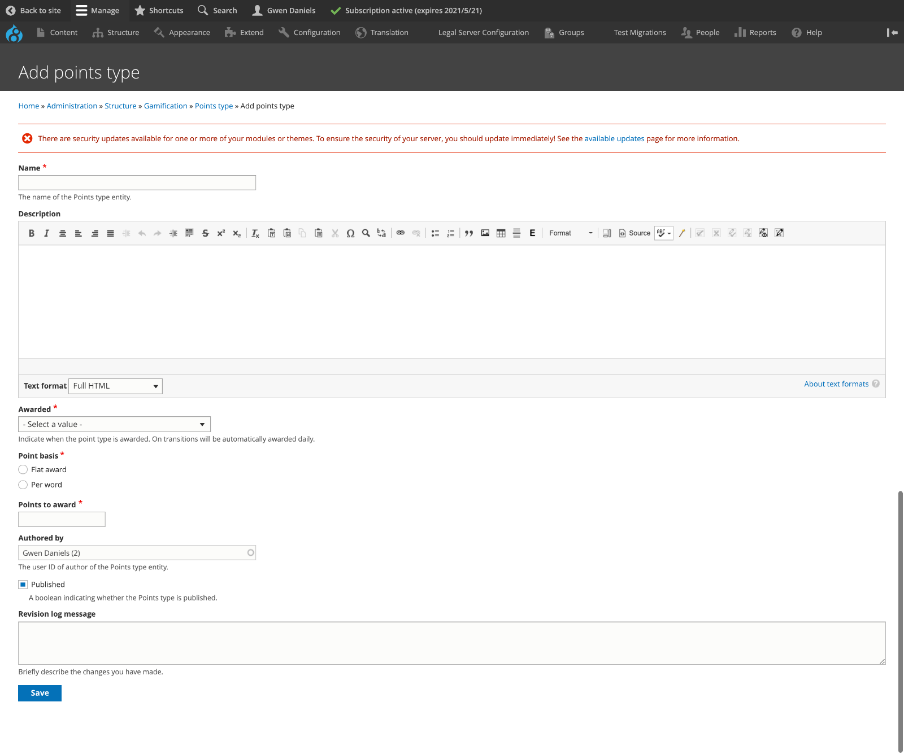

Gamification: Points¶
Point Types¶
Users with the Staff role may create point types and view a list of all point types.
Automatic points are awarded when a piece of legal content or ADRM content transitions across workflows:
On transition from published to draft - this may be triggered when a user starts an assignment
On transition from ready to review to published - this may be triggered when a staff member finalizes submitted work
On transition from draft to published - this may be triggered when a staff member creates a draft, inputs SME changes, and then publishes the revision
On transition from published to ready to review - this may be triggered when a user turns in completed work and never saved it as a draft
On transition from draft to ready to review - this may be triggered when a user turns in completed work and saves as a draft
Manual points are awarded by someone with the staff role.
Points may be configured to be awarded at a flat rate or based on the number of words in the node.
Creating a point type¶
Point types use a custom entity, similar to content types but without a defined front-facing interface.
Each point type:
has a name. Examples might be “User tested a feature” or “Edited legal information for the public”
has an optional description. This may be helpful to keep track of why a points type exists.
has a required Awarded field. This is used to help track when the points would be awarded by the system. Points can be awarded:
Manually; when this is selected, the system won’t ever award the points to a user automatically. This is useful for awards for activities outside of the legal content CMS.
Automatically; based on a transition in the workflow states (for example, when an article is approved by staff and moved from “ready to review” to “published”)
has a required Point basis. Points may be awarded at a flat rate (such as 50 points for taking a user survey) or per word (such as 2 points per word edited in an article)
has a Points to award field. This is where the number of points goes.
Todo
Block point types from being indexed by robots.txt.
Note
A warning will appear when saving a point type to remind staff to check to see if any existing badges or milestones need to be updated. For example, when a new point type is added, badges that aren’t set to include all point types may need to be updated.
Point Type Report¶
All point types can be viewed on the Points Type report, filtered by status and type and exported to CSV.
Note
A generic set of point types should be created. For example, a point type of “Points per word”, “Points per article”, “User testing points”, etc. These can be mixed and matched in badges and/or milestones.
Rules for Automated Point Awards¶
Automated point awards will be awarded:
To revision authors who do not have the staff or intern role
Only to the same node/language/author pair once every 24 hours (so that we don’t accidentally award points multiple times)
Note
Automated awards run on a scheduled task overnight. They will not be awarded automatically and they can not be awarded manually.
Rules for Manual points¶
Manual points may be awarded via a separate form and may optionally be tied to a legal content node. This may be most helpful for content editorial contributions that are outside of workflow management such as:
Easy form reviews
Toolboxes, tools, and tool steps
Portal main pages
Points Awarded¶

“Points awarded” is the entity that stores points awarded to specific users, either automatically or manually.
A report of points awarded shows all points awarded in the system.